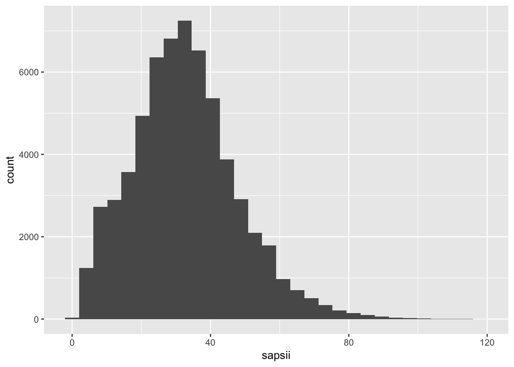
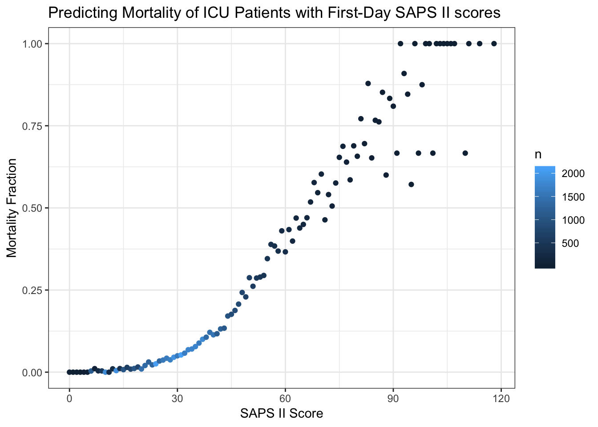
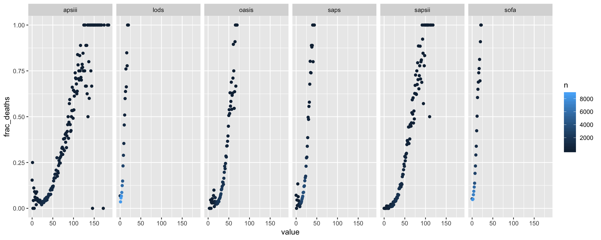
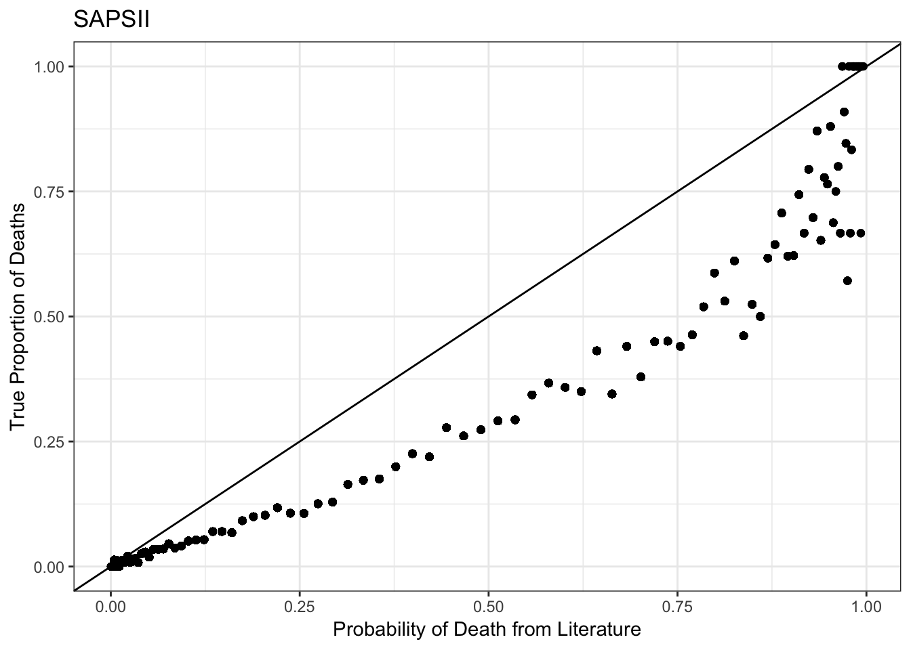
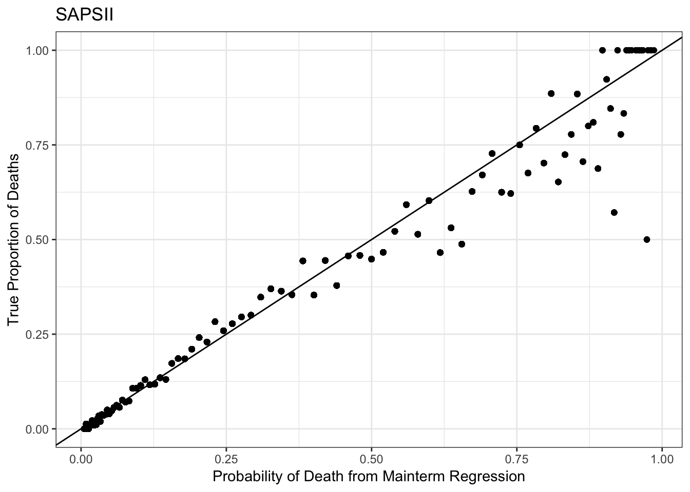
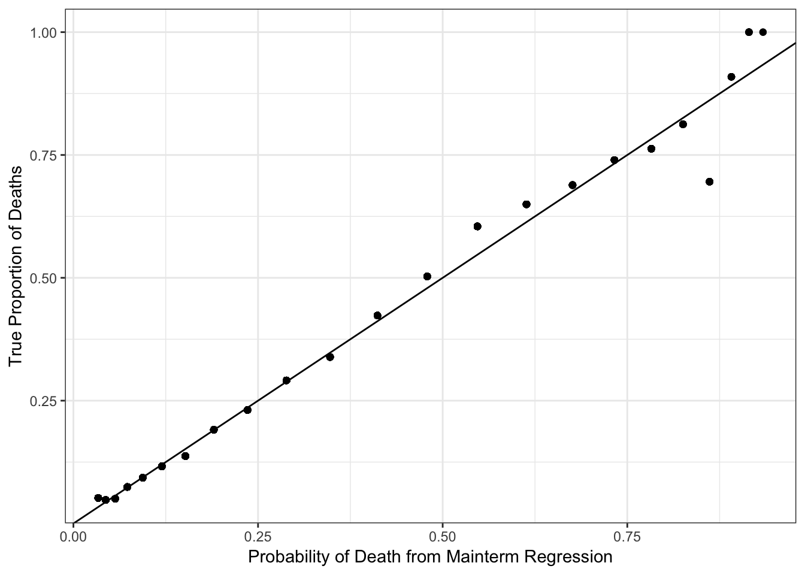
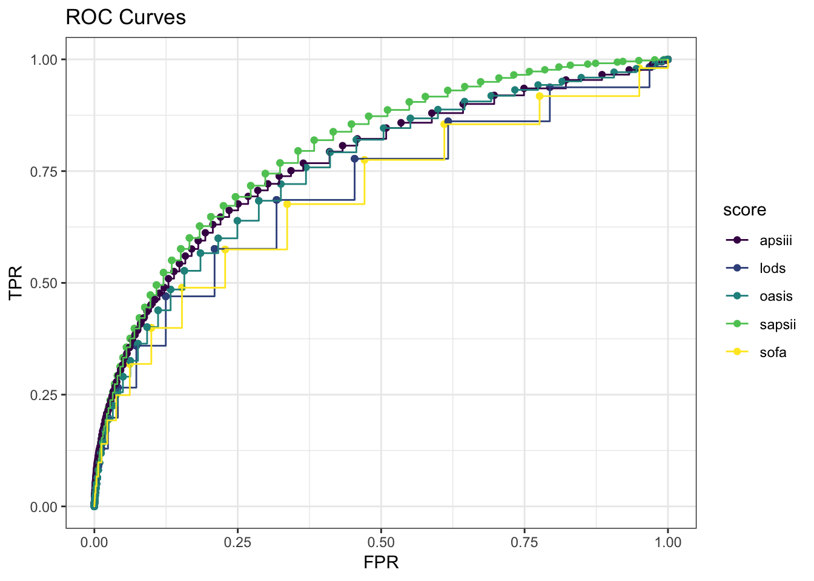
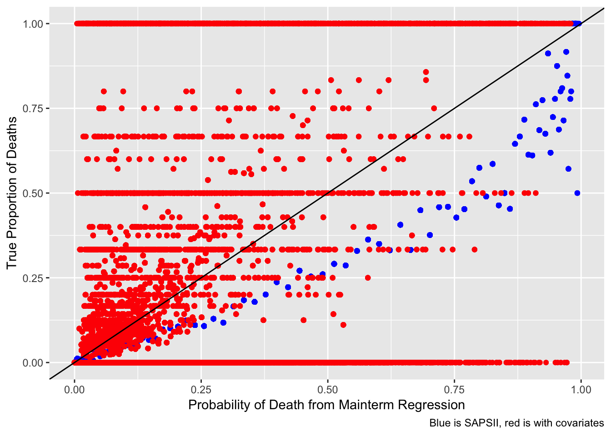
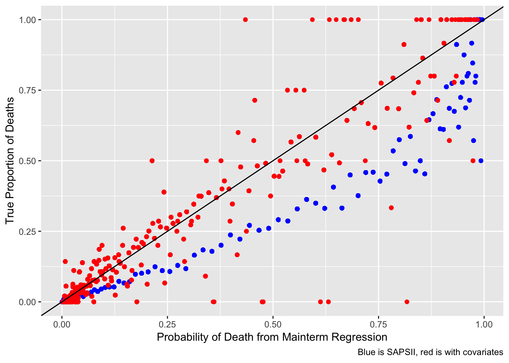
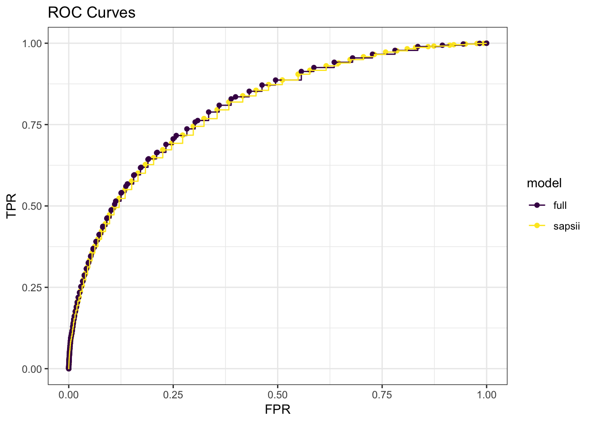

Generating severity scores
Laura Cosgrove
11/20/2018
Database Setup
# Load configuration settings
dbdriver <- 'PostgreSQL'
host <- '127.0.0.1'
port <- '5432'
user <- 'postgres'
password <- 'postgres'
dbname <- 'mimic'
schema <- 'mimiciii'
# Connect to the database using the configuration settings
con <- dbConnect(dbDriver(dbdriver), dbname = dbname, host = host, port = port,
user = user, password = password)
# Set the default schema
dbExecute(con, paste("SET search_path TO ", schema, sep=" "))## [1] 0Set this database as the connection for all future sql chunks:
knitr::opts_chunk$set(connection = "con")(Note: The above chunk is most useful if you use knitr to generate the analysis! But in building the analysis it is better to run your query by saving the sql query as a character object then using dbGetQuery, since the only way to obtain the SQL output is to use knitr.)
Motivation
The purpose for this portion of the report is to leverage the physiologic data from the EMR in order to estimate likelihood of in-hospital death using severity scores pre-determined in the literature as being a useful proxy for likeliood of mortality. One of these severity scores, or a combination of the scores, will provide us with our base model, after which we will explore whether a model additionally considering factors like insurance coverage, gender, and ethnicity will improve the fit in any meaningful way.
Generating Views
We will make use of the local Postgres database and the publicly-accessible https://github.com/MIT-LCP/mimic-code from the MIT Computational Physiology lab to make use of biological data in order to obtain computational physiology severity scores.
We need to generate some views into the database before the query to generate the severity scores:
- uofirstday - generated by urine-output-first-day.sql. This draws from the “outputevents” table measured from CareVue, an ICU vitals monitoring device, to obtain
- ventdurations - generated by ventilation-durations.sql
- vitalsfirstday - generated by vitals-first-day.sql
- gcsfirstday - generated by gcs-first-day.sql
- labsfirstday - generated by labs-first-day.sql
- bloodgasarterialfirstday - generated by blood-gas-first-day-arterial.sql
urine_view <- read_file("./database/mimic-code/concepts/firstday/urine-output-first-day.sql")
ventdurations_view <- read_file("./database/mimic-code/concepts/durations/ventilation-durations.sql")
vitals_view <- read_file("./database/mimic-code/concepts/firstday/vitals-first-day.sql")
gcs_view <- read_file("./database/mimic-code/concepts/firstday/gcs-first-day.sql")
labs_view <- read_file("./database/mimic-code/concepts/firstday/labs-first-day.sql")
bloodgasarterial_view <- read_file("./database/mimic-code/concepts/firstday/blood-gas-first-day-arterial.sql")
sapsii_view <- read_file("./database/mimic-code/concepts/severityscores/sapsii.sql")
#Generate materialized views
dbGetQuery(con, urine_view)
dbGetQuery(con, ventdurations_view)
dbGetQuery(con, vitals_view)
dbGetQuery(con, gcs_view)
dbGetQuery(con, labs_view)
dbGetQuery(con, bloodgasarterial_view)
dbGetQuery(con, sapsii_view)#View sapsii_data
sapsii_query <- "SELECT *
FROM sapsii i;"
sapsii_data <- as.tibble(dbGetQuery(con, sapsii_query))
write_csv(sapsii_data, path = "./database/sapsii.csv")Plot distribution:
sapsii_data %>%
ggplot(aes(x = sapsii)) +
geom_histogram()## `stat_bin()` using `bins = 30`. Pick better value with `binwidth`.
A note in the SQL file is the following: Note:
The score is calculated for all ICU patients, with the assumption that the user will subselect appropriate ICUSTAY_IDs.
For example, the score is calculated for neonates, but it is likely inappropriate to actually use the score values for these patients.
Alternate, for knitting:
SELECT *
FROM sapsii i| subject_id | hadm_id | icustay_id | sapsii | sapsii_prob | age_score | hr_score | sysbp_score | temp_score | pao2fio2_score | uo_score | bun_score | wbc_score | potassium_score | sodium_score | bicarbonate_score | bilirubin_score | gcs_score | comorbidity_score | admissiontype_score |
|---|---|---|---|---|---|---|---|---|---|---|---|---|---|---|---|---|---|---|---|
| 55973 | 152234 | 200001 | 38 | 0.2125600 | 12 | 4 | 5 | 0 | NA | 11 | NA | 0 | 0 | 0 | 0 | 0 | 0 | 0 | 6 |
| 27513 | 163557 | 200003 | 30 | 0.1063982 | 7 | 4 | 5 | 0 | NA | 0 | 0 | 3 | 0 | 0 | 3 | 0 | 0 | 0 | 8 |
| 10950 | 189514 | 200006 | 20 | 0.0372047 | 7 | 2 | 5 | 0 | NA | 0 | 0 | 0 | 0 | 0 | 0 | NA | 0 | 0 | 6 |
| 20707 | 129310 | 200007 | 18 | 0.0292952 | 7 | 0 | 5 | 0 | NA | 0 | 0 | 0 | 0 | 0 | 0 | NA | 0 | 0 | 6 |
| 29904 | 129607 | 200009 | 21 | 0.0417535 | 7 | 0 | 5 | 0 | 6 | 0 | 0 | 0 | 3 | 0 | 0 | NA | 0 | 0 | 0 |
| 11861 | 192256 | 200010 | 6 | 0.0045838 | 0 | 0 | 0 | 0 | NA | 0 | 0 | 0 | 0 | 0 | 0 | 0 | 0 | 0 | 6 |
| 93535 | 121562 | 200011 | 41 | 0.2660865 | 18 | 2 | 0 | 0 | 6 | 0 | 6 | 0 | 3 | 0 | 0 | NA | 0 | 0 | 6 |
| 28448 | 177527 | 200012 | 11 | 0.0112653 | 0 | 0 | 5 | 0 | NA | 0 | 0 | 0 | 0 | 0 | 0 | NA | 0 | 0 | 6 |
| 9514 | 127229 | 200014 | 43 | 0.3055972 | 18 | 2 | 5 | 0 | 6 | 4 | 0 | 0 | 0 | 0 | 0 | 0 | 0 | 0 | 8 |
| 74032 | 117458 | 200016 | 20 | 0.0372047 | 12 | 2 | 5 | 0 | NA | 0 | 0 | 0 | 0 | 1 | 0 | NA | 0 | 0 | 0 |
Visualize how fractions of death increase
For a quick validation, we’ll visualize how the fractions of deaths increase for the SAPSII scores.
admissions <- read_csv("./database/data/ADMISSIONS.csv.gz") %>%
janitor::clean_names()## Parsed with column specification:
## cols(
## ROW_ID = col_integer(),
## SUBJECT_ID = col_integer(),
## HADM_ID = col_integer(),
## ADMITTIME = col_datetime(format = ""),
## DISCHTIME = col_datetime(format = ""),
## DEATHTIME = col_datetime(format = ""),
## ADMISSION_TYPE = col_character(),
## ADMISSION_LOCATION = col_character(),
## DISCHARGE_LOCATION = col_character(),
## INSURANCE = col_character(),
## LANGUAGE = col_character(),
## RELIGION = col_character(),
## MARITAL_STATUS = col_character(),
## ETHNICITY = col_character(),
## EDREGTIME = col_datetime(format = ""),
## EDOUTTIME = col_datetime(format = ""),
## DIAGNOSIS = col_character(),
## HOSPITAL_EXPIRE_FLAG = col_integer(),
## HAS_CHARTEVENTS_DATA = col_integer()
## )patients <- read_csv("./database/data/PATIENTS.csv.gz") %>%
janitor::clean_names()## Parsed with column specification:
## cols(
## ROW_ID = col_integer(),
## SUBJECT_ID = col_integer(),
## GENDER = col_character(),
## DOB = col_datetime(format = ""),
## DOD = col_datetime(format = ""),
## DOD_HOSP = col_datetime(format = ""),
## DOD_SSN = col_datetime(format = ""),
## EXPIRE_FLAG = col_integer()
## )admissions %>%
inner_join(., patients, by = "subject_id") %>%
filter(has_chartevents_data == 1) %>%
inner_join(., sapsii_data, by = "hadm_id") %>%
mutate(target = if_else(deathtime %in% NA, 0, 1),
predictor = sapsii) %>%
select(subject_id.x, target, predictor) %>%
group_by(predictor) %>%
summarize(deaths = sum(target),
n = n()) %>%
mutate(frac_deaths = deaths/n) %>%
ggplot(aes(x = predictor, y = frac_deaths)) +
geom_point(aes(color = n)) +
labs(x = "SAPS II Score",
y = "Mortality Fraction",
title = "Predicting Mortality of ICU Patients with First-Day SAPS II scores") +
theme_bw()
Other severity scores
(Note: must run document once before knitting, but eval is set to false so the views aren’t re-loaded every time you knit.)
sofa_view <- read_file("./database/mimic-code/concepts/severityscores/sofa.sql")
lods_view <- read_file("./database/mimic-code/concepts/severityscores/lods.sql")
saps_view <- read_file("./database/mimic-code/concepts/severityscores/saps.sql")
apsiii_view <- read_file("./database/mimic-code/concepts/severityscores/apsiii.sql")
oasis_view <- read_file("./database/mimic-code/concepts/severityscores/oasis.sql")
#SOFA needs echo data
echodata_view <- read_file("./database/mimic-code/concepts/echo-data.sql")
dbGetQuery(con, echodata_view)
dbGetQuery(con, sofa_view)
#LODS
dbGetQuery(con, lods_view)
#SAPS needs ventilated first day
ventfirstday_view <- read_file("./database/mimic-code/concepts/firstday/ventilation-first-day.sql")
dbGetQuery(con, ventfirstday_view)
dbGetQuery(con, saps_view)
# APSIII
dbGetQuery(con, apsiii_view)
# OASIS
dbGetQuery(con, oasis_view)As before, read all the data from the generated materialized views into tibbles:
#SOFA
sofa_query <- "SELECT *
FROM sofa i;"
sofa_data <- as.tibble(dbGetQuery(con, sofa_query))
#LODS
lods_query <- "SELECT *
FROM lods i;"
lods_data <- as.tibble(dbGetQuery(con, lods_query))
#SAPS
saps_query <- "SELECT *
FROM saps i;"
saps_data <- as.tibble(dbGetQuery(con, saps_query))
# APSIII
apsiii_query <- "SELECT *
FROM apsiii i;"
apsiii_data <- as.tibble(dbGetQuery(con, apsiii_query))
#OASIS
oasis_query <- "SELECT *
FROM oasis i;"
oasis_data <- as.tibble(dbGetQuery(con, oasis_query))Plot curves for all other scores
Analysis with admissions data
icu_detail <- read_csv("./database/icu_detail.csv") %>%
janitor::clean_names()## Parsed with column specification:
## cols(
## subject_id = col_integer(),
## hadm_id = col_integer(),
## icustay_id = col_integer(),
## gender = col_character(),
## dod = col_datetime(format = ""),
## admittime = col_datetime(format = ""),
## dischtime = col_datetime(format = ""),
## los_hospital = col_double(),
## admission_age = col_double(),
## ethnicity = col_character(),
## admission_type = col_character(),
## hospital_expire_flag = col_integer(),
## hospstay_seq = col_integer(),
## first_hosp_stay = col_logical(),
## intime = col_datetime(format = ""),
## outtime = col_datetime(format = ""),
## los_icu = col_double(),
## icustay_seq = col_integer(),
## first_icu_stay = col_logical()
## )predictor_detail_data <- icu_detail %>%
inner_join(., sapsii_data, by = "hadm_id") %>%
inner_join(., sofa_data, by = "hadm_id") %>%
inner_join(., lods_data, by = "hadm_id") %>%
inner_join(., saps_data, by = "hadm_id") %>%
inner_join(., apsiii_data, by = "hadm_id") %>%
inner_join(., oasis_data, by = "hadm_id") %>%
select(hadm_id, subject_id, icustay_id, gender, ethnicity, admission_type, admission_age, los_hospital, los_icu, dod, hospital_expire_flag.y, hospstay_seq, first_hosp_stay, icustay_seq, first_icu_stay, sapsii, sofa, lods, saps, apsiii, oasis, respiration, coagulation, liver, cardiovascular.y, cns, renal.y, ends_with("score")) %>%
rename(death_bin = hospital_expire_flag.y) %>%
filter(admission_type != "NEWBORN")
write_csv(predictor_detail_data, "./database/predictor_detail_data.csv")
#Correlation of aggregate scores for distinct ICU stays (to remove confusion due to readmission)
predictor_detail_data %>%
distinct(icustay_id, .keep_all = TRUE) %>%
select(sapsii:oasis) %>%
cor()## sapsii sofa lods saps apsiii oasis
## sapsii 1.0000000 0.6838641 0.8021351 0.7417353 0.7558680 0.6600098
## sofa 0.6838641 1.0000000 0.7351709 0.5986570 0.7025452 0.4945946
## lods 0.8021351 0.7351709 1.0000000 0.6846753 0.7509069 0.5936155
## saps 0.7417353 0.5986570 0.6846753 1.0000000 0.6562129 0.6457071
## apsiii 0.7558680 0.7025452 0.7509069 0.6562129 1.0000000 0.5838826
## oasis 0.6600098 0.4945946 0.5936155 0.6457071 0.5838826 1.0000000predictor_detail_data %>%
#Select for single admission
distinct(icustay_id, .keep_all = TRUE) %>%
gather(key = score, value, sapsii, saps, sofa, lods, apsiii, oasis) %>%
group_by(score, value) %>%
summarize(deaths = sum(death_bin),
n = n()) %>%
mutate(frac_deaths = deaths/n) %>%
ggplot(aes(x = value, y = frac_deaths)) +
geom_point(aes(color = n)) +
facet_grid(~score)
Individual mortality prediction
It’s fine just as a quick gut check to see how fraction of deaths increase over the distributions of the various severity scores. But how do the scores perform based on their original authored likelihoods?
SAPS II
We’ll start with the SAPS II score.
Individual mortality prediction for the SAPS II score is defined by its authors to be:
log([pr(death)][1 - pr(death)]) = -7.7631 + 0.07237SAPSII + 0.9971log(1 + SAPSII)
A mortality prediction algorithm is said to have adequate discrimination if it tends to assign higher severity scores to patients that died in the hospital compared to those that did not. To evaluate discrimination, we’ll visualize the probability of death as predicted by the SAPSII score versus the actual proportion of patients who died with that SAPSII score.
Because I suspect I may want the information to do subgroup analyses, I’m going to start by using the large datasheet from the predictor_detail_data.
#Joining admissions and length of stay, and adding probability of death
predictor_detail_data %>%
distinct(hadm_id, .keep_all = TRUE) %>%
select(hadm_id, sapsii, death_bin) %>%
mutate(prob_death = exp(-7.7631 + 0.07237*sapsii + 0.9971*log(1 + sapsii))/(1 + exp(-7.7631 + 0.07237*sapsii + 0.9971*log(1 + sapsii)))) %>%
group_by(sapsii) %>%
add_tally(death_bin) %>%
rename(tot_death_by_group = n) %>%
add_tally() %>%
mutate(prop_death = tot_death_by_group/n) %>%
select(sapsii, prob_death, prop_death) %>%
ggplot(aes(x = prob_death, y = prop_death)) +
geom_point() +
geom_abline(slope = 1, intercept = 0) +
labs(title = "SAPSII",
x = "Probability of Death from Literature",
y = "True Proportion of Deaths") +
theme_bw()
Although the authors of the SAPS score publish a non-linear in parameters regression for association with likelihood of death, I’ll fit a main-term logistic regression to obtain mortality prediction based on a linear-in-parameters assumption.
fit_sapsii <- predictor_detail_data %>%
distinct(icustay_id, .keep_all = TRUE) %>%
select(sapsii, death_bin) %>%
glm(death_bin ~ sapsii, family = binomial, data = .)
fit_sapsii %>%
broom::tidy()## # A tibble: 2 x 5
## term estimate std.error statistic p.value
## <chr> <dbl> <dbl> <dbl> <dbl>
## 1 (Intercept) -5.22 0.0489 -107. 0
## 2 sapsii 0.0803 0.00104 77.0 0fit_sapsii %>%
broom::tidy(conf.int = TRUE, exponentiate = TRUE)## # A tibble: 2 x 7
## term estimate std.error statistic p.value conf.low conf.high
## <chr> <dbl> <dbl> <dbl> <dbl> <dbl> <dbl>
## 1 (Intercept) 0.00541 0.0489 -107. 0 0.00491 0.00595
## 2 sapsii 1.08 0.00104 77.0 0 1.08 1.09The regression fits a parameter estimate of log([pr(death)][1 - pr(death)]) = -5.22 + 0.0803*SAPSII; or, for every unit increase in SOFA score, you can expect to have 1.08x the odds of death.
I’ll refit the plot based on the mainterm regression:
predictor_detail_data %>%
distinct(icustay_id, .keep_all = TRUE) %>%
select(hadm_id, sapsii, death_bin) %>%
mutate(prob_death = exp( -5.22 + 0.0803*sapsii)/(1 + exp(-5.22 + 0.0803*sapsii))) %>%
group_by(sapsii) %>%
add_tally(death_bin) %>%
rename(tot_death_by_group = n) %>%
add_tally() %>%
mutate(prop_death = tot_death_by_group/n) %>%
select(sapsii, prob_death, prop_death) %>%
ggplot(aes(x = prob_death, y = prop_death)) +
geom_point() +
geom_abline(slope = 1, intercept = 0) +
labs(title = "SAPSII",
x = "Probability of Death from Mainterm Regression",
y = "True Proportion of Deaths") +
theme_bw()
We see a better fit with the mainterm logistic regression, which makes sense given that the literature value was an externally-generated prediction, while our regression is internally-generated. Keep that caveat in mind as we continue with algorithm comparison for other scores, because no direct external value exists for predictive capability of the other severity scores; rather, they’re used in practive as clinical decision support rather than giving probability determination.
SOFA Score
Authors of the SOFA score do not publish a base probability calculation for likelihood of death, so I’ll use a main-term logistic regression to obtain mortality prediction based on the SOFA score.
fit_sofa <- predictor_detail_data %>%
distinct(icustay_id, .keep_all = TRUE) %>%
select(sofa, death_bin) %>%
glm(death_bin ~ sofa, family = binomial, data = .)
fit_sofa %>%
broom::tidy()## # A tibble: 2 x 5
## term estimate std.error statistic p.value
## <chr> <dbl> <dbl> <dbl> <dbl>
## 1 (Intercept) -3.36 0.0280 -120. 0
## 2 sofa 0.273 0.00409 66.7 0fit_sofa %>%
broom::tidy(conf.int = TRUE, exponentiate = TRUE)## # A tibble: 2 x 7
## term estimate std.error statistic p.value conf.low conf.high
## <chr> <dbl> <dbl> <dbl> <dbl> <dbl> <dbl>
## 1 (Intercept) 0.0347 0.0280 -120. 0 0.0328 0.0366
## 2 sofa 1.31 0.00409 66.7 0 1.30 1.32The regression fits a parameter estimate of log([pr(death)][1 - pr(death)]) = -3.36 + 0.273*SOFA; for every unit increase in SOFA score, you can expect to have 1.31x the odds of death.
predictor_detail_data %>%
distinct(icustay_id, .keep_all = TRUE) %>%
select(hadm_id, sofa, death_bin) %>%
mutate(prob_death = exp(-3.36 + 0.273*sofa)/(1 + exp(-3.36 + 0.273*sofa))) %>%
group_by(sofa) %>%
add_tally(death_bin) %>%
rename(tot_death_by_group = n) %>%
add_tally() %>%
mutate(prop_death = tot_death_by_group/n) %>%
select(sofa, prob_death, prop_death)%>%
ggplot(aes(x = prob_death, y = prop_death)) +
geom_point() +
geom_abline(slope = 1, intercept = 0) +
labs(x = "Probability of Death from Mainterm Regression",
y = "True Proportion of Deaths") +
theme_bw()
This regression obtains a good fit, which makes sense because the probability was obtained from our data rather than a literature value.
Map for all Scores
We can use a map operation with some tidying of our original data to speed up the generation of the predicted probabilities of each score.
predictor_detail_data_tidy <- predictor_detail_data %>%
distinct(icustay_id, .keep_all = TRUE) %>%
gather(key = score, value = score_value, sapsii, sofa, lods, apsiii, oasis) %>%
select(icustay_id, score, score_value, everything())
predictor_detail_data_tidy %>%
select(score, death_bin, score_value) %>%
group_by(score) %>%
nest() %>%
mutate(glm = map(data, ~glm(death_bin ~ score_value, family = binomial, data = .))) %>%
mutate(glm_coef = map(glm, broom::tidy)) %>%
select(score, glm_coef) %>%
unnest() %>%
knitr::kable()| score | term | estimate | std.error | statistic | p.value |
|---|---|---|---|---|---|
| sapsii | (Intercept) | -5.2192420 | 0.0488676 | -106.80368 | 0 |
| sapsii | score_value | 0.0802632 | 0.0010430 | 76.95157 | 0 |
| sofa | (Intercept) | -3.3612355 | 0.0280183 | -119.96578 | 0 |
| sofa | score_value | 0.2729313 | 0.0040941 | 66.66408 | 0 |
| lods | (Intercept) | -3.5465359 | 0.0301791 | -117.51615 | 0 |
| lods | score_value | 0.3235153 | 0.0047330 | 68.35295 | 0 |
| apsiii | (Intercept) | -4.4522295 | 0.0400586 | -111.14294 | 0 |
| apsiii | score_value | 0.0494333 | 0.0006722 | 73.53993 | 0 |
| oasis | (Intercept) | -5.8499849 | 0.0624610 | -93.65818 | 0 |
| oasis | score_value | 0.1129726 | 0.0016420 | 68.80387 | 0 |
All severity scores are significant predictors. We’ll need to impute a special result for SAPSII following this code, because we’re taking the literature value:
score_data_tidy <- predictor_detail_data_tidy %>%
select(score, death_bin, score_value) %>%
group_by(score) %>%
nest() %>%
mutate(glm = map(data, ~glm(death_bin ~ score_value, family = binomial, data = .))) %>%
mutate(glm_coef = map(glm, broom::tidy)) %>%
mutate(predictions = map2(data, glm, modelr::add_predictions)) %>%
select(score, predictions) %>%
unnest() %>%
mutate(prob_death = exp(pred)/(1 + exp(pred))) %>%
mutate(prob_death = if_else(score == "sapsii",
exp(-7.7631 + 0.07237*score_value + 0.9971*log(1 + score_value))/(1 + exp(-7.7631 + 0.07237*score_value + 0.9971*log(1 + score_value))),
prob_death))score_data_tidy %>%
select(score, death_bin, prob_death) %>%
group_by(score, prob_death) %>%
add_tally(death_bin) %>%
rename(tot_death_by_group = n) %>%
add_tally() %>%
mutate(prop_death = tot_death_by_group/n) %>%
ggplot(aes(x = prob_death, y = prop_death, color = score)) +
geom_point() +
geom_abline(slope = 1, intercept = 0) +
labs(x = "Probability of Death from Mainterm Regression or Literature Value",
y = "True Proportion of Deaths")
Above, we’ve plotted the true, observed proportion of deaths for each score value versus the probability of death predicted from mainterm regression (or, in the SAPSII case, a literature value) for each severity score. Each point is a particular score value for a patient – i.e., there are 5x the numbers of ICU patients plotted.
There’s some interesting data here! As expected, the SAPSII test, being from a literature value, is further under the equality line for most scores. This means that the external, literature value is more aggressive in estimating probability of death for patients, compared ot probabilities imputed from regression on our data. This could be because the care at Beth Israel Deaconness is unusually good, or it could be because it is clinically useful that a classification algorithm be a bit more aggressive in estimating severity.
Another interesting finding is that some severity scores “silo” near probabilities 1 and 0. This could mean that there needs to be an adjustment in the range of the severity scores.
Area under ROC curves
To plot the area under the curve for the SAPSII and SOFA scores, I need to calculate the respective TPR and FPR for each score. I’ll use the literature value for the SAPSII score.
for_roc <- score_data_tidy %>%
select(score, death_bin, prob_death) %>%
group_by(score) %>%
nest()
###############ROC AUC Functions#############################
#This code could be improved with a better function.
roc_log_fcn <- function(result, y_prob){
probs <- seq(0,1, by = 0.005)
roc_log <- matrix(0, nrow = length(probs), ncol=2)
i <- 1
for(p in probs){
pred <- y_prob > p
##False positive rate
FPR <- sum(!result & pred)/sum(!result)
##True positive rate
TPR <- sum(result & pred)/sum(result)
roc_log[i,] <- c(FPR, TPR)
i <- i + 1
}
return(roc_log)
}
#SAPSII
sapsii_for_roc <- for_roc %>%
filter(score == "sapsii") %>%
unnest()
roc_log_sapsii <- roc_log_fcn(sapsii_for_roc$death_bin, sapsii_for_roc$prob_death)
#SOFA
sofa_for_roc <- for_roc %>%
filter(score == "sofa") %>%
unnest()
roc_log_sofa <- roc_log_fcn(sofa_for_roc$death_bin, sofa_for_roc$prob_death)
#LODS
lods_for_roc <- for_roc %>%
filter(score == "lods") %>%
unnest()
roc_log_lods <- roc_log_fcn(lods_for_roc$death_bin, lods_for_roc$prob_death)
#APSIII
apsiii_for_roc <- for_roc %>%
filter(score == "apsiii") %>%
unnest()
roc_log_apsiii <- roc_log_fcn(apsiii_for_roc$death_bin, apsiii_for_roc$prob_death)
#OASIS
oasis_for_roc <- for_roc %>%
filter(score == "oasis") %>%
unnest()
roc_log_oasis <- roc_log_fcn(oasis_for_roc$death_bin, oasis_for_roc$prob_death)
tidy_for_roc <- tibble(FPR_sapsii = roc_log_sapsii[,1], TPR_sapsii = roc_log_sapsii[,2],
FPR_sofa = roc_log_sofa[,1], TPR_sofa = roc_log_sofa[,2],
FPR_lods = roc_log_lods[,1], TPR_lods = roc_log_lods[,2],
FPR_apsiii = roc_log_apsiii[,1], TPR_apsiii = roc_log_apsiii[,2],
FPR_oasis = roc_log_oasis[,1], TPR_oasis = roc_log_oasis[,2]) %>%
gather(key = score, value = FPR, starts_with("FPR")) %>%
gather(key = score2, value = TPR, starts_with("TPR")) %>%
mutate(score = if_else(score == "FPR_sapsii",
#yes sapsii
if_else(score2 == "TPR_sapsii", "sapsii", "NA"),
#no sapsii
(if_else(score == "FPR_sofa",
# yes sofa
if_else(score2 == "TPR_sofa", "sofa", "NA"),
# no sofa
(if_else(score == "FPR_lods",
#yes lods
if_else(score2 == "TPR_lods", "lods", "NA"),
# no lods
(if_else(score == "FPR_apsiii",
if_else(score2 == "TPR_apsiii", "apsiii", "NA"),
(if_else(score == "FPR_oasis",
if_else(score2 == "TPR_oasis", "oasis", "NA"), "NA"
)))))))))
) %>%
filter(score != "NA")
tidy_for_roc %>%
select(score, FPR, TPR) %>%
ggplot(aes(x = FPR, y = TPR, color = score)) +
geom_point() +
geom_step() +
labs(title = "ROC Curves") +
theme_bw() +
scale_color_viridis_d()
SAPSII looks like the best-performing model, and let’s confirm that with an AUROC analysis.
auc <- function(roc){
len <- nrow(roc)
##The "delta X" values
delta <- roc[-1,1]-roc[-len,1]
##The "heights" the rectangle (drop the first or last).
hgt <- roc[-1,2]
##The Riemann Sum
sum(-delta*hgt)
}
tibble(score = c("sapsii", "sofa", "lods", "apsiii", "oasis"), AUROC = c(auc(roc_log_sapsii), auc(roc_log_sofa), auc(roc_log_lods), auc(roc_log_apsiii), auc(roc_log_oasis))) %>%
arrange(desc(AUROC)) %>%
knitr::kable()| score | AUROC |
|---|---|
| sapsii | 0.7952234 |
| apsiii | 0.7651836 |
| oasis | 0.7505908 |
| lods | 0.7023117 |
| sofa | 0.6930094 |
SAPSII is our winner in terms of AUROC.
Adding other predictors to our model
The above analysis showed us that when considered severity scores computed from biomarkers, the best mortality algorithm as imputed by an AUROC analysis was the SAPSII score, taking the literature values for probability.
Can we improve upon this severity score by adding other predictors?
Our initial analysis showed that the best-fit logistic regression model for mortaility in terms of AIC included the following covariate terms from the admissions dataset: admission_type, admission_location, insurance, religion, marital_status, and ethnicity.
predictor_detail_data <- predictor_detail_data %>%
distinct(icustay_id, .keep_all = TRUE) %>%
#Need a couple more variables
inner_join(admissions, by = "hadm_id") %>%
select(icustay_id, death_bin, sapsii, admission_type.x, admission_age, admission_location, insurance, religion, marital_status, ethnicity.x) %>%
rename(admission_type = admission_type.x, ethnicity = ethnicity.x) %>%
mutate(admission_type = factor(admission_type), admission_age = factor(admission_age), insurance = factor(insurance), religion = factor(religion), marital_status = factor(marital_status), ethnicity = factor(ethnicity))
#Removing missing values for effective comparison
predictor_detail_data <- predictor_detail_data %>%
drop_na()
fit_null <- predictor_detail_data %>%
glm(death_bin ~ sapsii, data = .)
fit_alt <- predictor_detail_data %>%
glm(death_bin ~ sapsii + admission_type + admission_location + insurance + religion + marital_status + ethnicity, family = binomial, data = .)
#Use anova to compare the null with the added predictors model
anova(fit_null, fit_alt)## Analysis of Deviance Table
##
## Model 1: death_bin ~ sapsii
## Model 2: death_bin ~ sapsii + admission_type + admission_location + insurance +
## religion + marital_status + ethnicity
## Resid. Df Resid. Dev Df Deviance
## 1 50278 4389.2
## 2 50199 28422.4 79 -24033library(lmtest)## Loading required package: zoo##
## Attaching package: 'zoo'## The following objects are masked from 'package:base':
##
## as.Date, as.Date.numericlrtest(fit_null, fit_alt)## Likelihood ratio test
##
## Model 1: death_bin ~ sapsii
## Model 2: death_bin ~ sapsii + admission_type + admission_location + insurance +
## religion + marital_status + ethnicity
## #Df LogLik Df Chisq Pr(>Chisq)
## 1 3 -10042
## 2 81 -14211 78 8339.5 < 2.2e-16 ***
## ---
## Signif. codes: 0 '***' 0.001 '**' 0.01 '*' 0.05 '.' 0.1 ' ' 1##Shows a significant increase in log-likelihoodOur tests show a significant increase in log-likelihood for the alternative, larger model.
We can calculate AUROC for our new model and compare against SAPSII. Note that we will be missing some values we previously had.
predictor_detail_data %>%
mutate(prob_death_sapsii = exp(-7.7631 + 0.07237*sapsii + 0.9971*log(1 + sapsii))/(1 + exp(-7.7631 + 0.07237*sapsii + 0.9971*log(1 + sapsii)))) %>%
modelr::add_predictions(fit_alt) %>%
mutate(prob_death_full = exp(pred)/(1 + exp(pred))) %>%
select(icustay_id, death_bin, prob_death_sapsii, prob_death_full) %>%
group_by(prob_death_sapsii) %>%
add_tally(death_bin) %>%
rename(tot_death_by_sapsii = n) %>%
add_tally() %>%
mutate(prop_death_sapsii = tot_death_by_sapsii/n) %>%
ungroup() %>%
select(death_bin, prob_death_sapsii, prob_death_full, prop_death_sapsii) %>%
group_by(prob_death_full) %>%
add_tally(death_bin) %>%
rename(tot_death_by_full = n) %>%
add_tally() %>%
mutate(prop_death_full = tot_death_by_full/n) %>%
select(prob_death_sapsii, prop_death_sapsii, prob_death_full, prop_death_full) %>%
ggplot() +
geom_point(aes(x = prob_death_sapsii, y = prop_death_sapsii), color = "blue") +
geom_point(aes(x = prob_death_full, y = prop_death_full), color = "red") +
geom_abline(slope = 1, intercept = 0) +
labs(x = "Probability of Death from Mainterm Regression",
y = "True Proportion of Deaths",
caption = "Blue is SAPSII, red is with covariates")
What a mess! This goes to show that something that looks promising from a model diagnostics perspective may, in fact, be more complex and far less predictive in terms of individual probability values.
Can we improve it by just adding one term? We sure added a lot in the beginning, and a large number of factors. We’ll use the caret package to pick out the most promising variable:
head(caret::varImp(fit_alt))## Overall
## sapsii 70.30796782
## admission_typeEMERGENCY 6.55227777
## admission_typeURGENT 4.58258971
## admission_locationCLINIC REFERRAL/PREMATURE 0.80154474
## admission_locationEMERGENCY ROOM ADMIT 0.67432013
## admission_locationHMO REFERRAL/SICK 0.01456729#Admission type
fit_alt_2 <- predictor_detail_data %>%
glm(death_bin ~ sapsii + admission_type, family = binomial, data = .)
#Use anova to compare the null with the added predictors model
anova(fit_null, fit_alt_2)## Analysis of Deviance Table
##
## Model 1: death_bin ~ sapsii
## Model 2: death_bin ~ sapsii + admission_type
## Resid. Df Resid. Dev Df Deviance
## 1 50278 4389.2
## 2 50276 28875.5 2 -24486library(lmtest)
lrtest(fit_null, fit_alt_2)## Likelihood ratio test
##
## Model 1: death_bin ~ sapsii
## Model 2: death_bin ~ sapsii + admission_type
## #Df LogLik Df Chisq Pr(>Chisq)
## 1 3 -10042
## 2 4 -14438 1 8792.6 < 2.2e-16 ***
## ---
## Signif. codes: 0 '***' 0.001 '**' 0.01 '*' 0.05 '.' 0.1 ' ' 1#Plot
predictor_detail_data %>%
mutate(prob_death_sapsii = exp(-7.7631 + 0.07237*sapsii + 0.9971*log(1 + sapsii))/(1 + exp(-7.7631 + 0.07237*sapsii + 0.9971*log(1 + sapsii)))) %>%
modelr::add_predictions(fit_alt_2) %>%
mutate(prob_death_full = exp(pred)/(1 + exp(pred))) %>%
select(icustay_id, death_bin, prob_death_sapsii, prob_death_full) %>%
group_by(prob_death_sapsii) %>%
add_tally(death_bin) %>%
rename(tot_death_by_sapsii = n) %>%
add_tally() %>%
mutate(prop_death_sapsii = tot_death_by_sapsii/n) %>%
ungroup() %>%
select(death_bin, prob_death_sapsii, prob_death_full, prop_death_sapsii) %>%
group_by(prob_death_full) %>%
add_tally(death_bin) %>%
rename(tot_death_by_full = n) %>%
add_tally() %>%
mutate(prop_death_full = tot_death_by_full/n) %>%
select(prob_death_sapsii, prop_death_sapsii, prob_death_full, prop_death_full) %>%
ggplot() +
geom_point(aes(x = prob_death_sapsii, y = prop_death_sapsii), color = "blue") +
geom_point(aes(x = prob_death_full, y = prop_death_full), color = "red") +
geom_abline(slope = 1, intercept = 0) +
labs(x = "Probability of Death from Mainterm Regression",
y = "True Proportion of Deaths",
caption = "Blue is SAPSII, red is with covariates")
It looks like the algorithm withadmission_type added as a covariate has far more variance on observed proportion of deaths for a given assigned probabiity of death.
Testing original hypothesis
Finally, one of our original research questions was if insurance coverage could play a part in mortality, beyond basic diagnostic factors. For this, I’ll enter insurance type into the model as an interaction term, because our hypothesis is that the type of insurance someone has could modify the effect of severity of disease by affecting the quality of care that is given.
fit_alt_3 <- predictor_detail_data %>%
glm(death_bin ~ sapsii + insurance:sapsii, family = binomial, data = .)
#Use anova to compare the null with the added predictors model
anova(fit_null, fit_alt_3)## Analysis of Deviance Table
##
## Model 1: death_bin ~ sapsii
## Model 2: death_bin ~ sapsii + insurance:sapsii
## Resid. Df Resid. Dev Df Deviance
## 1 50278 4389.2
## 2 50274 29146.2 4 -24757library(lmtest)
lrtest(fit_null, fit_alt_3)## Likelihood ratio test
##
## Model 1: death_bin ~ sapsii
## Model 2: death_bin ~ sapsii + insurance:sapsii
## #Df LogLik Df Chisq Pr(>Chisq)
## 1 3 -10042
## 2 6 -14573 3 9063.2 < 2.2e-16 ***
## ---
## Signif. codes: 0 '***' 0.001 '**' 0.01 '*' 0.05 '.' 0.1 ' ' 1#Plot
predictor_detail_data %>%
mutate(prob_death_sapsii = exp(-7.7631 + 0.07237*sapsii + 0.9971*log(1 + sapsii))/(1 + exp(-7.7631 + 0.07237*sapsii + 0.9971*log(1 + sapsii)))) %>%
modelr::add_predictions(fit_alt_3) %>%
mutate(prob_death_full = exp(pred)/(1 + exp(pred))) %>%
select(icustay_id, death_bin, prob_death_sapsii, prob_death_full) %>%
group_by(prob_death_sapsii) %>%
add_tally(death_bin) %>%
rename(tot_death_by_sapsii = n) %>%
add_tally() %>%
mutate(prop_death_sapsii = tot_death_by_sapsii/n) %>%
ungroup() %>%
select(death_bin, prob_death_sapsii, prob_death_full, prop_death_sapsii) %>%
group_by(prob_death_full) %>%
add_tally(death_bin) %>%
rename(tot_death_by_full = n) %>%
add_tally() %>%
mutate(prop_death_full = tot_death_by_full/n) %>%
select(prob_death_sapsii, prop_death_sapsii, prob_death_full, prop_death_full) %>%
ggplot() +
geom_point(aes(x = prob_death_sapsii, y = prop_death_sapsii), color = "blue") +
geom_point(aes(x = prob_death_full, y = prop_death_full), color = "red") +
geom_abline(slope = 1, intercept = 0) +
labs(x = "Probability of Death from Mainterm Regression",
y = "True Proportion of Deaths",
caption = "Blue is SAPSII, red is with covariates")
For this hypothesis, I’ll create an AUROC curve.
full_for_roc <- predictor_detail_data %>%
modelr::add_predictions(fit_alt_3) %>%
mutate(prob_death = exp(pred)/(1 + exp(pred))) %>%
select(death_bin, prob_death)
roc_log_full <- roc_log_fcn(full_for_roc$death_bin, full_for_roc$prob_death)
tibble(FPR_sapsii = roc_log_sapsii[,1], TPR_sapsii = roc_log_sapsii[,2],
FPR_full = roc_log_full[,1], TPR_full = roc_log_full[,2]) %>%
gather(key = model, value = FPR, starts_with("FPR")) %>%
gather(key = model2, value = TPR, starts_with("TPR")) %>%
mutate(model = if_else(model == "FPR_sapsii",
if_else(model2 == "TPR_sapsii", "sapsii", "NA"),
if_else(model2 == "TPR_full", "full", "NA"))) %>%
filter(model != "NA") %>%
select(model, FPR, TPR) %>%
ggplot(aes(x = FPR, y = TPR, color = model)) +
geom_point() +
geom_step() +
labs(title = "ROC Curves") +
theme_bw() +
scale_color_viridis_d()
tibble(score = c("sapsii", "sapsii with insurance interaction"), AUROC = c(auc(roc_log_sapsii), auc(roc_log_full))) %>%
knitr::kable() | score | AUROC |
|---|---|
| sapsii | 0.7952234 |
| sapsii with insurance interaction | 0.8002027 |
The AUROC values for the two models are surprisingly close, something that is not apparent when looking at the predicted probabilities versus proportions of actual deaths.